Most hams probably are unfamiliar with group theory, however, the results can be easily verified without using group theory. The right eigenvectors 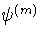 and the eigenvalues 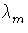 of a matrix M are defined by finding the solutions to the equations,
| M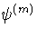 = . | (18) |
The cyclic eigenvectors in our basis, are those that change by a constant phase between the elements, with the same phase change between the last and first elements. This gives,
| 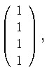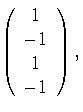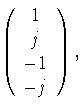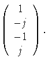 | (19) |
The input to the HA5WH network contains only the last two eigenvectors written above. That is
Vin = 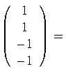 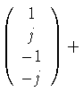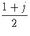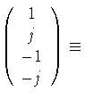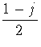 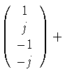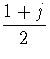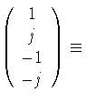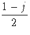 | (20) |
With the input as in Eq. 23, the output will in general be
|
Vout = ga | (21) |
| VA = (1 - j)ga + (1 + j)gb | |||
| VB = (1 - j)jga - (1 + j)jgb | (22) |
|
20 | (23) |
The analysis so far shows how the HA5WH network can be motivated. The C4 eigenvectors have equal amplitudes for the 4 voltages, and have a phase shift between adjacent ports of 0 o , + 90 o , 180 o , and 270 o , this last is equivalent to a phase shift of - 90 o . We want to choose the network drive, connections, and component values to select out one of the two 90 o phase shifted eigenvectors. As an aside, the same ideas could be used to design a 60 o relative phase shift by using a network invariant under the group C6 , or a 45 o shift from C8 , etc.
The first step in selecting the component values is to calculate
the eigenvalues of the four M matrices. By direct multiplication,
I get
|
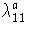 = 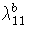 = 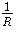 + j | |||
|
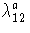 = - | |||
|
= - | |||
|
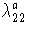 = = - | (24) |
The effect of one of the A matrices, when a single eigenvector is input, is given by replacing the M matrices in Eq. 11 by their eigenvalues. After a little algebra, I get,
| A a = 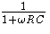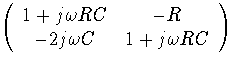 |
| A b = 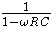 | (25) |
The A b matrix is proportional to A a. If we feed the section of the
network with a linear combination of  and , the
section suppresses relative to
and , the
section suppresses relative to  by a factor
of
by a factor
of
| 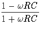. | (26) |
The HA5WH network has the properties that the magnitude of the ratio given in
Eq. 30 is always less than 1 for positive frequencies,
and it is exactly zero for
 = 1/(RC) .
The first property says that additional network sections can
only improve the relative 90 o phase shift of the outputs.
The second says that we can set the frequencies of exact 90 o
phase shift by selecting the RC values of single network sections.
These two properties greatly simplify the design and optimization
of the network.
= 1/(RC) .
The first property says that additional network sections can
only improve the relative 90 o phase shift of the outputs.
The second says that we can set the frequencies of exact 90 o
phase shift by selecting the RC values of single network sections.
These two properties greatly simplify the design and optimization
of the network.
The sideband suppression at a single frequency is given for an n section network, with RC values in section i given by Ri and Ci , as
| Suppression = 20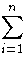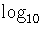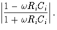 | (27) |
A simple method of picking the RC values for each section is to use a computer to plot the above result, and adjust n and RiCi to achieve the required suppression. This is in fact the obvious technique to use if you are trying to design with a set of parts already in your junk box. However, the form of the suppression makes it easy to select optimum values as seen in the next section.